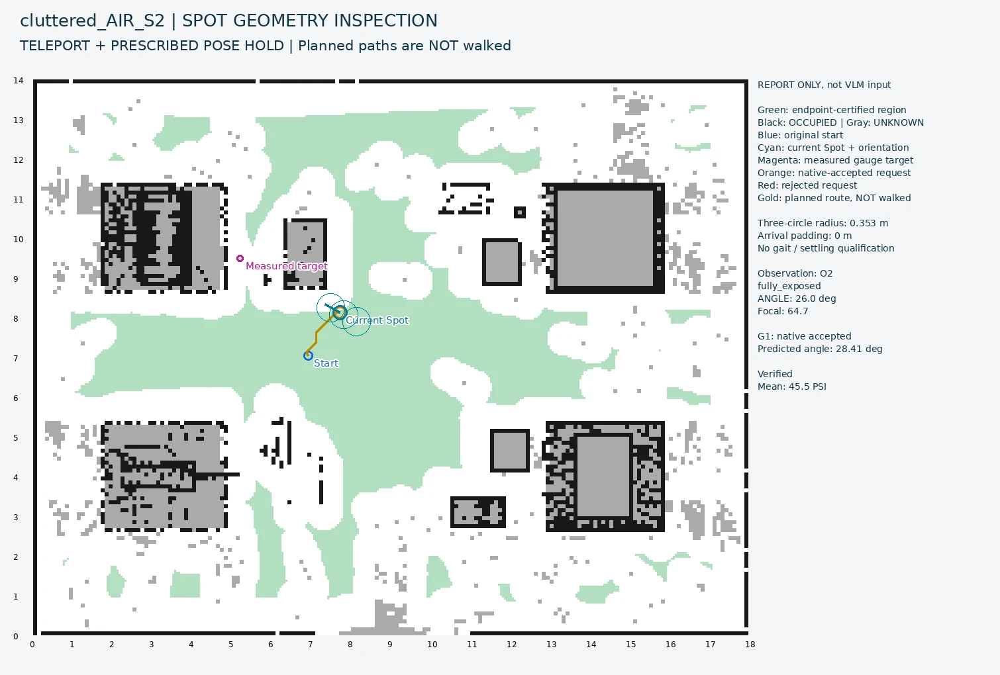
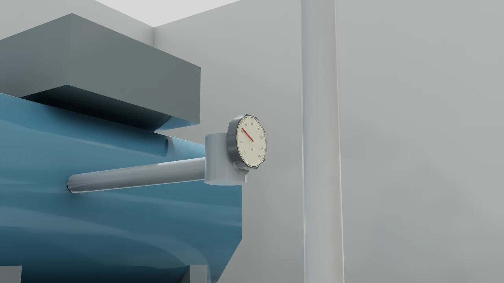
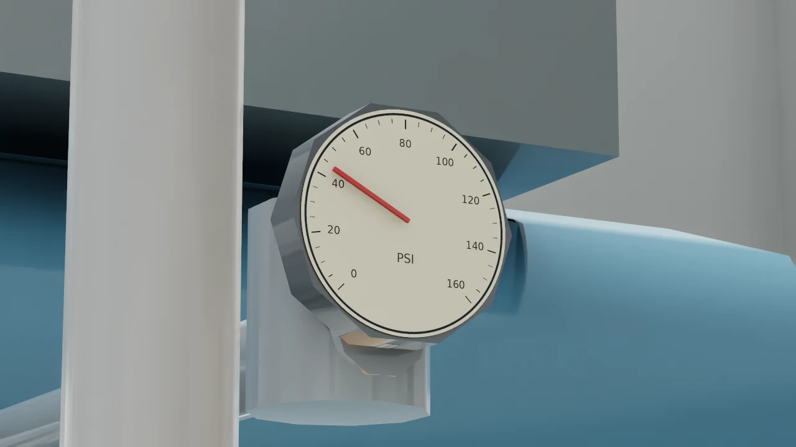

Graduate research · Carnegie Mellon University · CERLAB
VLM — Robot Manager
VLM-Guided Visual Inspection with Boston Dynamics Spot
I built the simulation, perception, viewpoint selection, and evaluation pipeline for gauge inspection, the first working task within a broader language-driven robot manager.
Three successful examples from the October 1 factory run. These are edited observations from guarded teleport tests, not continuous walking or real-time footage. Routes were checked but not physically traversed.
Objective
The long-term goal is a robot manager that translates language requests into factory inspection tasks: surveying equipment, obtaining a requested view, and checking operating status. Gauge inspection provides a concrete first test of the shared problem: getting the robot and camera into a position where the observation is useful.
The implemented pipeline begins near a target machine, locates the gauge, improves the view, and reads it. General language-based task orchestration and long-term inspection memory remain planned work.
Design & Implementation
RGB-D measurement and camera control
I built an Isaac Sim 5.0 / ROS 2 / Docker testbed with a simulated Spot-mounted pan-tilt-zoom camera and configurable gauges. A VLM detects the gauge's 2D bounding box; aligned depth and camera calibration locate it in 3D. RANSAC plane fitting estimates the dial normal for geometric view-angle prediction. The selector uses these measurements, not the gauge's simulator ground truth.
The camera re-aims at the measured target after repositioning. A bounded zoom step improves dial size before reading. I created a procedural factory with four circular gauge designs, different ranges and units, and clean and cluttered layouts with cabinets, pipe racks, and low skids.
Viewpoint selection with explicit geometry checks
I first implemented a VLM policy that selects map coordinates from RGB, a 2D overlay, and observation history. Obstacle tests motivated separating visual judgment from precise geometry. My geometric selector searches footprint-feasible cells, predicts dial framing and line of sight through the sensed 3D map, and ranks acceptable views by angle and travel distance.
I integrated the lab's existing map_manager, GridGraph planner, and autonomous_robot framework through a separate ROS 1 inspection node and ROS 2 adapter. I added checks for the exact requested pose, start/goal connectors, and swept turns instead of relying on the state of a nearby graph node. The factory experiments call the compiled native planner through an isolated runner.

Fresh observations and explicit outcomes
After a move, fresh visibility and angle checks determine whether to select another viewpoint. The measured target is retained if the gauge temporarily leaves view. Five final-image readings run in parallel; observation quality and reading consistency produce Verified, Uncertain, or Cannot Verify.
I logged poses, model replies, and top-down views, with ground truth used only for evaluation. Verified is an online status, not a guarantee: consistent readings can still be wrong.


Results & Evaluation
Active observation improved the matched pilot
I compared three methods from the same eight oblique starting conditions, for 24 simulated episodes. All used the same reader and five readings per final image. Both moving methods used the same endpoint/route validator and teleport executor.
| Method | Correct mean reading | Correct and Verified |
|---|---|---|
| Fixed viewpoint | 0 / 8 | 0 / 8 |
| VLM-selected viewpoint | 8 / 8 | 7 / 8 |
| Geometry-selected viewpoint | 8 / 8 | 8 / 8 |
Correctness meant mean error within 2% of full scale. One VLM-selected view remained partly occluded despite a correct reading. Seven fixed-view episodes returned consistent but incorrect readings, which the observation gate withheld from verification. Geometry also received aligned depth and a sensed 3D map, so this was a system comparison, not an equal-input test of the two selectors.
Local selection reduced decision latency
I replaced exhaustive visibility checks with ordered, batched checks that stop once a suitable proposal is found. On nine archived pilot queries, median selection time fell from 6.99 s to 0.84 s with unchanged proposals. Across the eight episodes, optimized local selection averaged 0.95 s versus 21.31 s in the historical VLM selection logs. This compares component timings across runs, not end-to-end system speed.
In the latest factory run, selection plus native pose/path validation took a median 1.05 s across six proposals. Five parallel readings took a median 17.06 s per batch. Selection timing excludes initial perception and region construction; neither timing measures walking travel time.
Factory transfer and remaining limits
The October 3 development run covered four gauge designs across two layouts: 12 of 15 episodes were correct and Verified, one was falsely Verified, one Uncertain, and one Cannot Verify. Eight starts were already frontal; of the seven oblique starts, five became correct and Verified. The reader inferred PSI, bar, and MPa from the images without range or unit hints.
These results demonstrate transfer within the simulator, not held-out generalization or hardware reliability. A false Verified reading persisted even near a frontal view. Current geometry assumes planar circular dials and optimizes horizontal viewing angle. Real depth quality, walking drift, and reading-driven viewpoint recovery remain unqualified.
Ongoing: joint movement and camera policy
I am designing a local vision-language-action policy for joint body movements and camera pan/tilt, using geometry-generated expert data and retaining deterministic collision checks. Action labels and input formats are being specified; training and performance evaluation have not started.